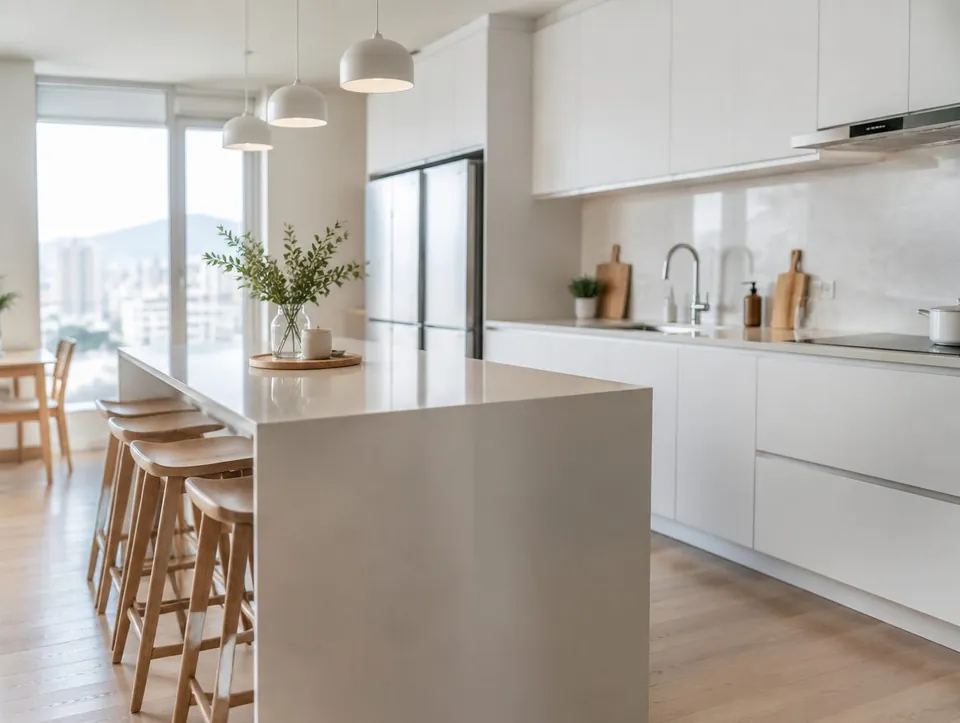
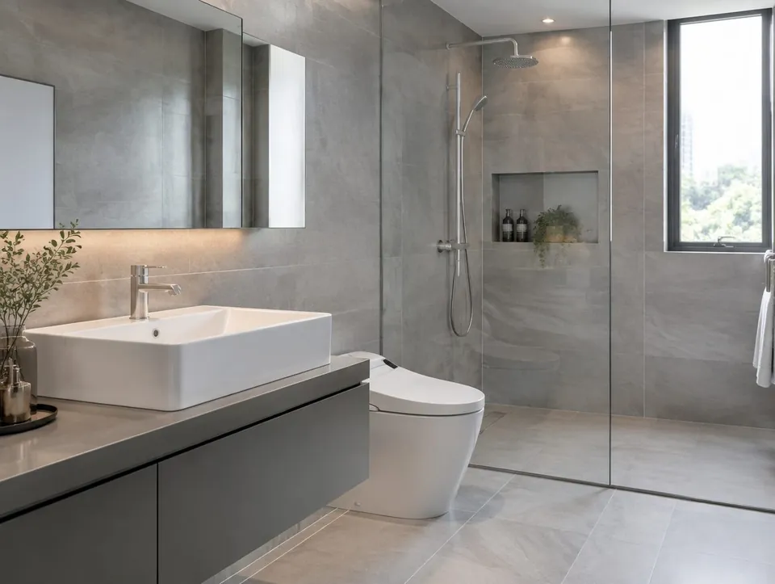
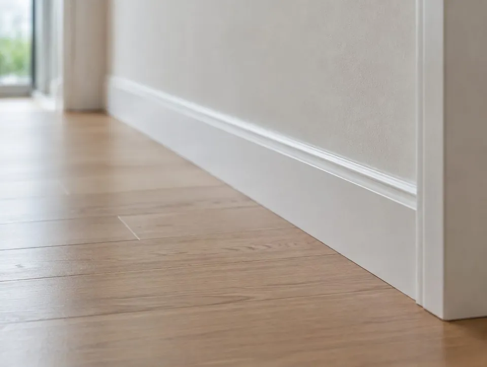

○○인테리어 D는 어떤 곳인가요?
○○인테리어 D는 남동구에서 인테리어 · 리모델링 일을 하는 곳입니다. 인천 구월 아파트 · 상가 인테리어. 실측부터 마감까지 한 팀이 끝까지 봅니다.
- 상호
- ○○인테리어 D
- 업종
- 인테리어 · 리모델링
- 서비스 지역
- 인천 구월 · 부평 · 송도
- 영업시간
- 평일 09:00 ~ 18:00
- 주소
- 남동구 00로 00
- 공정표와 일정 공유
- 추가 비용 발생 시 사전 동의
- 마감 후 1년 하자 보수
SERVICE
○○인테리어 D가 하는 일
인천 구월 아파트 · 상가 인테리어. 실측부터 마감까지 한 팀이 끝까지 봅니다.
PROCESS
진행 순서
- 상담 · 실측
- 시안 · 견적
- 계약 · 공정표
- 시공
- 준공 · 하자 점검
PHOTO
현장 · 매장 사진
예시 사진입니다. 실제 사이트에는 사장님 매장 · 현장 사진이 들어갑니다.



FAQ
자주 묻는 질문
공사 기간은 얼마나 걸리나요?
30평대 전체 리모델링 기준 4~6주입니다. 철거 후 상태에 따라 달라질 수 있어 공정표로 안내드립니다.
살면서 공사가 가능한가요?
부분 공사는 가능합니다. 전체 공사는 소음 · 분진 때문에 비우시는 것을 권합니다.
관리사무소 신고는 누가 하나요?
공사 신고와 이웃 동의서는 저희가 준비해 드립니다.
견적은 어떻게 받나요?
현장 실측 후 자재 등급별로 견적서를 드립니다. 실측 없이 평수만으로 드리는 금액은 참고용입니다.
무료 실측 상담
○○인테리어 D · 010-0000-0000